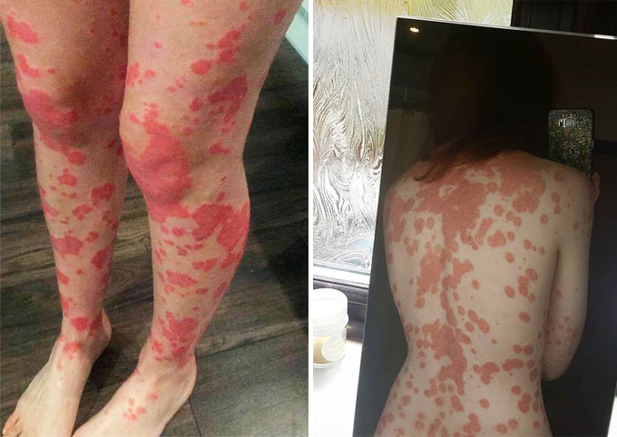

Оказа се, че псориазисът може да се излекува
Добър ден на всички, Казвам се Павлина, на 31 години съм. Искам да споделя откровената си история на борбата ми с псориазиса. Как той ми съсипа училищните години, как се опитвах да се излекувам и до какво доведе това. Ако не беше чичо ми, който ми намери начин как да се отърва от псориазиса, нямаше да мога да се справя с болестта. Тази история ще Ви помогне да започнете лечението си веднага с правилните стъпки, да спестите време, пари и здравето си.
Искам да споделя малко лична история за борбата ми с псориазиса. Как той ми съсипа всичките училищни години, как се опитвах да се излекувам и до какво доведе това. Но най-важното е, че се отървах от него! Тази история ще Ви помогне да избегнете грешки и да започнете лечението веднага с правилните стъпки.
Училищната ми история
В началното училище бях много общително, весело и жизнерадостно момиче. Но после всичко се промени. Започнаха да ми се подиграват, да ме избягват, да ми се присмиват, често ме разплакваха – и всичко това заради псориазиса.
 псориазис, 4 клас
псориазис, 4 клас
Тогава изпитах истински стрес. Спомням си как седях в ъгъла на дългия коридор, чешейки ръцете си до месо, цапайки с кръв изгладената и опраната от майка ми блуза и плачех.
Когато тормозът премина всички граници, учителите разговаряха с класа, разказвайки му, че Павлина се нуждае от подкрепа, че тя има тежко заболяване и не е заразна. Но разговорите действаха само, докато учителят си тръгне, а мен ме обиждаха още по-силно. Все пак разговорите отнемаха ценното свободно време на моите съученици.
Към 16-годишна възраст на всички започнаха да им играят хормоните. Съученичките ми започнаха да се гримират, да носят поли, да замазват пъпките си. Аз също започнах да се гримирам и псориазисът не издържа това изкуство – цялото ми лице се покри с яркочервени петна. След такъв случай помолих майка ми да отиде в болницата и да ми вземе болничен за цял живот, само и само да не ходя на училище. Но ни дадоха само няколко седмици.
Болници. Лекарства. Ужас.
Веднага щом се появиха първите люспи на псориазиса, родителите ми започнаха да ме влачат по болниците. На прегледа при лекаря винаги се надявах да чуя нещо добро, думи на надежда, но виждайки тъжните лица на родителите си и сериозните лица на лекарите, разбирах, че всичко е много зле. Тогава за първи път от разговора научих за болести като СПИН и хепатит.
Беше много страшно. Тялото ми непрекъснато ме сърбеше, откъсвах парчета кожа, появиха се кървящи рани. Родителите ми не се предаваха. Със страх и уплашени очи те ме водеха за ръка по лекари, съветваха се, опитваха се да ми помогнат по някакъв начин.

След всеки лекарски преглед, ние бягахме в аптеката и купувахме всичко, което беше написано в бележката. Вкъщи ме караха да се мажа с всякакви мехлеми и да вземам една шепа бели хапчета. За да се засили ефектът, родителите взеха още в арсенала си народни средства – вана с билки и миризлив сапун.
Усложнения
Курсът с хормоналните лекарства даде резултат – люспите малко изчезнаха. Цената на това беше висока: започнах да надебелявам. Принудително седнах на диета, с която от къщата завинаги изчезнаха всички сладки неща. Но ограничението само намали скоростта на качването на килограми.
Тогава надебелях до около 80 килограма. След като ми направиха изследвания се оказа, че лекарствата удрят силно по черния дроб. След известно време цялото ми тяло започна да се покрива с огромни възпалени циреи.

Лекарите вдигнаха тревога, дадоха ми болничен за един месец и ме взеха в болницата. Толкова много се зарадвах, че няма да ходя на училище, но когато започнаха да ми бият инжекции, да ми преливат кръв и да всеки ден да минавам безкрайни прегледи – продължавах да се радвам, защото това е много по-добре от училище. Между другото, храната там беше ужасна, и за това свалих почти всичките си излишни килограми.
След болницата болестта ми продължи в спокоен ритъм. Завърших училище, влязох в университет.
Университет, рецидив, последна надежда
Отначало всичко беше нормално, но когато сесията започна и дойдоха нови хора, започнах да се притеснявам – псориазисът ми започна да прогресира.
Засегна 60% от кожата, обривът беше навсякъде: гърдите, шията, главата, ръцете, краката и гърба. Всичко това сърбеше, беше невъзможно да се търпи ... Отново месо, кръв.

Цялата в стрес и люспи, побягнах вкъщи да плача във възглавницата. Цял ден гонех всички и не отварях вратата на стаята си. На втория, когато малко се успокоих и огладнях, отидох на кухнята.
Бях много изненадана, когато видях чичо си. Не сме се виждали от години! По-рано с часове си говорихме по телефона за това кой какви методи е опитал и как те не работят. След това спряхме да си звъним и изчезнахме от радара един на друг.
В този ден той седеше без нито едно петно по тялото! Бях в шок и един въпрос ми се въртеше в главата: защо той не ми се обади и не ми каза, че е намерил начин?
Чичо ми прочете целия спектър от емоции в очите ми и ме покани да седна на масата.
Разказът му продължи няколко часа. Същността му беше следната: той на нервната почва получил сериозни усложнения и решил да отиде да се лекува в чужбина. Там той посетил няколко десетки от най-добрите лекари и само един успял да му помогне.
След като го изслушах, попитах колко пари е похарчил. Сумата, която той ми назова, щях да я събирам няколко години. Малко разстроена исках да си тръгна и за да продължа да плача, но чичо ми ме спря, подаде ми някакво лекарство, наречено , и добави, че са успели да го излекуват само с това.
Ново лекарство от чичо
Когато всички си тръгнаха, с нетърпение започнах да изучавам лекарството. Всъщност всичко се оказа много просто: намазваш лекарството върху люспите. Започнах курса.

Отидох на сесията. Многото хора, погледите върху моите петна и самото полагане на изпити отново преобърнаха нервната ми система, но този път псориазисът не се влоши. Подозирах, нещо хубаво.
Всеки ден, гледайки се в огледалото, виждах, че люспите ми намаляват. Дори водих сметка на петната, които са изчезнали. А след това започнаха да ми правят комплименти в университета, което ме накара да се разтопя като сняг в топло време. Люспите приличаха на изгорена от слънцето кожа и не плашеха хората. Дори един младеж се залепи за мен веднъж, но това е отделна история.
Започнах да нося шорти и тениски по-уверено, настроението ми никога повече не потъваше в сълзи, а курсът с лекарството приключи.
Отново плачех, но по друга причина: радвам се, че кожата ми стана като на обикновените хора. През нощта понякога сънувах, че цялата съм покрита с петна, които кървят, но когато се събуждах, въздишах така, че полилеят на тавана се люлееше.
Вече няколко години не съм имала рецидиви, независимо колко се ядосвах. И буквално тази седмица видях същото това лекарство да се продава! Производителят на е започнал да продава продукта си чрез официалния си сайт. Ще прикача линка по-долу. Късмет на всички, бъдете здрави!